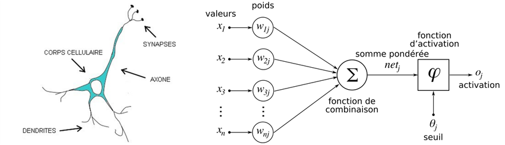
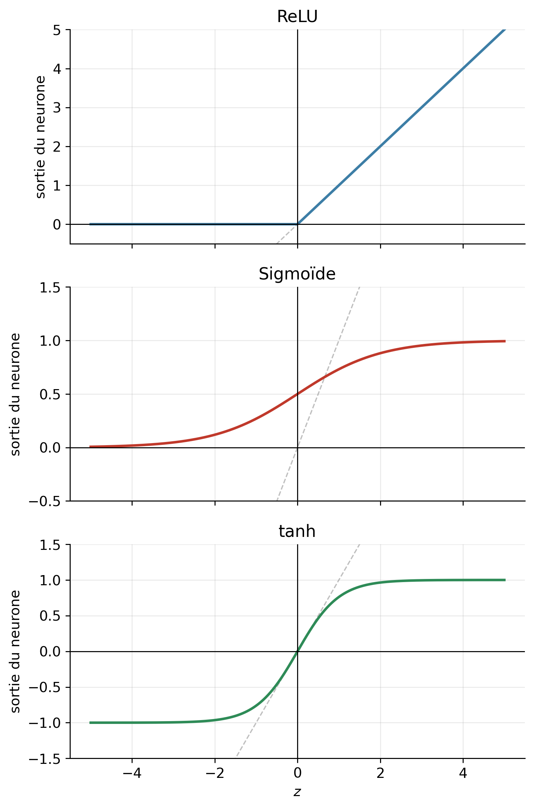

flowchart LR
x(["x"])
subgraph neuron ["neurone"]
direction LR
z(["z = wx + b"]) --> s(["σ(z)"])
end
x -- "w" --> z
s --> y(["f(x)"])
classDef neuron fill:#e7e3f7,stroke:#5b52c4,stroke-width:1.5px,color:#2c2c2a;
classDef input fill:#f3f1ec,stroke:#6d6c66,stroke-width:1.5px,color:#2c2c2a;
class z,s neuron;
class x,y input;
style neuron fill:none,stroke:#d8d6cd,stroke-dasharray:4 4;
CM2 - Réseaux de neurones
1 Introduction
Un réseau de neurones artificiel (ANN Artificial Neural Network ) est inspiré du fonctionnement du cerveau.

1.1 Neurone biologique
- Un neurone génère un signal s’il y a assez de signaux d’entrées dans les dendrites
- Les neurones reçoivent les entrées depuis d’autres neurons en amont, et transmettent des signaux à d’autres neurones en aval
- Chaque neurone a son propre seuil d’activation. Lorsque le seuil est atteint, le neurone émet une impulsion électrique qui parcourt l’axone jusqu’aux neurones en aval. En dessous du seuil, il ne se passe rien.
1.2 Neurone artificiel
- Les entrées sont les données \(x_1, \ldots, x_D\)
- On multiplie chaque entrée par un poids \(w_i\), puis on somme le résultat
- Une fonction d’activation renvoie un résultat, qui est utilisé dans la couche de neurones suivante.
| Neurone biologique | Neurone artificiel | Explication |
|---|---|---|
| Dendrites | Entrées \(x_1, \ldots, x_D\) | entrées |
| Synapses | Poids \(w_i\) | module la force du signal d’entrée |
| Potentiel de membrane | Somme pondérée \(\sum_i w_i x_i\) | somme pondérée |
| Seuil d’activation | Biais \(b\) + fonction d’activation | décide si le neurone s’active |
Les ANN ont été inventés en 1943. Il y avait initialement un grand engouement pour ce modèle, notamment avec l’invention du perceptron dans les années 50. Mais les limitations du modèle initial à une seule couche engendré une baisse de la recherche dans le domaine. C’était l’“hiver de l’IA”, dans les années 1970-1980.
La recherche s’est ravivée dans les années 80 avec le développement des réseaux multi-couches entraînés avec la backpropagation. Depuis les années 2000, l’arrivée de données massives grâce à internet et l’amélioration du hardware ont fait décoller les usages.
Pour donner un ordre de grandeur : un cerveau humain compte environ 86 milliards de neurones reliés par \(10^{14}\) synapses, là où un grand modèle de langage comme GPT-3 n’a que 175 milliards (\(1{,}75 \times 10^{11}\)) de paramètres.
1.3 Justification
Notre modèle en transformation linéaire est trop simple :
- le prix n’évolue pas forcément de manière linéaire. Il faudrait pouvoir “courber” notre fonction
f. Nous allons pour cela ajouter une fonction d’activation. - il faudrait qu’il prenne en compte d’autres caractéristiques : nombre de pièces, localisation, étiquette DPE, …
- Notre entrée \(x\) et le biais \(b\) vont devenir des vecteurs
- Le poids \(W\) va devenir une matrice
2 Fonction d’activation
Une ligne droite ou un plan ne permet en général pas de modéliser un problème complexe. Nous aurions besoin d’ajouter des “courbes” ou “plis” à notre tracé. Il faut pour cela appliquer une fonction non-linéaire à la sortie de notre transformation linéaire. Nous appelons cette fonction la fonction d’activation.
Notre modèle devient :
Important
\[f(x) = \sigma(\underbrace{wx + b}_{z})\]
Nous avons créé un neurone artificiel à une seule dimension.
- \(z = wx + b\) est la sortie de la transformation linéaire — on l’appelle la pré-activation.
- \(\sigma\) est la fonction d’activation.
En apprentissage machine, nous utiliserons l’une de ces 3 fonctions :
| Nom | Formule (pour info, ne pas retenir) | Valeurs de sortie | Utilisation |
|---|---|---|---|
| ReLU (Rectified Linear Unit) | \(ReLU(z) = max(0, z)\) | \([0, +\infty[\) | Choix par défaut dans les couches cachées (hidden layers) : simple et rapide à calculer |
| Sigmoïde (sigmoid) | \(sigmoid(z) = \dfrac{1}{1 + e^{-z}}\) | \(]0, 1[\) | Couche de sortie d’une classification binaire (binary classification) : donne une probabilité |
| Tangente hyperbolique (tanh) | \(tanh(z) = \dfrac{e^{z} - e^{-z}}{e^{z} + e^{-z}}\) | \(]-1, 1[\) | Couches cachées, quand on veut une sortie centrée sur 0 |

NoteÀ observer sur ces courbes
- ReLU : la sortie est nulle tant que \(z < 0\) — le neurone reste éteint. Au-delà, elle suit exactement \(z\). Le “pli” en \(z = 0\) suffit à casser la linéarité.
- Sigmoïde : la sortie est écrasée entre 0 et 1, ce qui se lit comme une probabilité. Loin de 0, la courbe devient plate : le neurone sature et n’apprend presque plus.
- tanh : même forme en S que la sigmoïde, mais centrée sur 0 et allant de -1 à 1.
2.1 Activité : modèle avec un seul neurone
Cliquez sur ce lien : Modèle à un neurone.
Le but : ajuster la courbe aux points le mieux possible (curve fitting). Utilisez le coût pour vous guider.
2.2 Trois neurones
On constate qu’un seul neurone ne permet pas de modéliser correctement certaines formes, comme la bosse.
Important
\[ \begin{aligned} h_1 &= \sigma(w_1 x + b_1) \\ h_2 &= \sigma(w_2 x + b_2) \\ f(x) &= v_1 h_1 + v_2 h_2 + c \end{aligned} \]
- \(h_1\) et \(h_2\) sont les sorties de la couche cachée (hidden layer) : deux neurones qui reçoivent la même entrée \(x\), mais avec chacun ses propres paramètres.
- \(f(x)\) est la sortie de la couche de sortie (output layer) : un seul neurone, qui combine \(h_1\) et \(h_2\) avec les poids \(v_1, v_2\) et le biais \(c\).
- Le modèle possède maintenant 7 paramètres : \(w_1, b_1, w_2, b_2, v_1, v_2, c\).
Ce modèle se représente sous forme de graphe de calcul : chaque cercle est un neurone, chaque flèche porte un poids.
flowchart LR
x(["x"])
subgraph hidden ["couche cachée"]
direction TB
h1(["h₁ = σ(w₁x + b₁)"])
h2(["h₂ = σ(w₂x + b₂)"])
end
subgraph output ["couche de sortie"]
f(["f(x) = v₁h₁ + v₂h₂ + c"])
end
x -- "w₁" --> h1
x -- "w₂" --> h2
h1 -- "v₁" --> f
h2 -- "v₂" --> f
classDef neuron fill:#e7e3f7,stroke:#5b52c4,stroke-width:1.5px,color:#2c2c2a;
classDef input fill:#f3f1ec,stroke:#6d6c66,stroke-width:1.5px,color:#2c2c2a;
class h1,h2,f neuron;
class x input;
style hidden fill:none,stroke:#d8d6cd,stroke-dasharray:4 4;
style output fill:none,stroke:#d8d6cd,stroke-dasharray:4 4;
La largeur d’une couche est le nombre de neurones \(M\) dans cette couche.
NotePourquoi cela change tout
Chaque neurone caché apporte son propre “pli” (grâce à \(\sigma\)) : le poids \(w_i\) règle la raideur du pli, le biais \(b_i\) sa position sur l’axe des \(x\). La couche de sortie additionne ensuite ces plis en les dosant avec \(v_1\) et \(v_2\).
Avec 2 neurones cachés on obtient 2 plis, avec 3 neurones 3 plis, etc. C’est ce qui permet d’épouser une courbe quelconque, là où un neurone unique ne pouvait produire qu’une seule inflexion.
Notez qu’il n’y a pas de fonction d’activation sur la couche de sortie ici : en régression, on veut une sortie libre dans \(]-\infty, +\infty[\), alors que \(\sigma\) l’écraserait dans un intervalle borné.
NotePourquoi pas deux neurones ?
Brancher la sortie d’un neurone sur l’entrée d’un autre, \(f(x) = \sigma(v\,\sigma(wx + b) + c)\), ne suffit pas :
\(\sigma\) est monotone (elle monte ou elle descend), et composer deux fonctions monotones donne encore une fonction monotone. La courbe ne peut que monter, ou que descendre — jamais faire une bosse.
Il faut donc placer les neurones en parallèle : ils reçoivent la même entrée \(x\), chacun avec ses propres paramètres, et un dernier neurone combine leurs sorties.
2.3 Activité : modèle à plusieurs neurones
Cliquez sur ce lien : Modèle à plusieurs neurones.
Même exercice que précédemment, mais avec une couche cachée dont vous choisissez la taille. Combien de neurones faut-il pour épouser chaque forme ?
3 Plusieurs dimensions
Nous avons vu jusqu’ici des modèles à une seule dimension : l’entrée \(x\) est un nombre réel. Pour pouvoir modéliser des problèmes plus complexes, on va ajouter plusieurs caractéristiques (features) à notre entrée.
Par exemple, pour estimer le prix d’un appartement, on va aussi prendre en compte sa localisation, le nombre de pièces, …
3.1 Vecteurs
Si on prend également en compte le nombre de pièces, notre entrée \(\mathbf{x}\) devient un vecteur de caractéristiques (feature vector) à \(D = 2\) dimensions.
\[ \mathbf{x} = \begin{pmatrix} x_1 \\ x_2 \end{pmatrix} \]
- \(x_1\) représente la surface en m²
- \(x_2\) représente le nombre de pièces
On écrira les vecteurs et les matrices en gras, pour les distinguer des nombres.
3.2 Un neurone avec 2 dimensions
Pour un seul neurone et deux dimensions, notre modèle devient :
\[f(\mathbf{x}) = \sigma(\underbrace{w_1 x_1 + w_2 x_2 + b}_{z})\]
Le neurone a maintenant un poids par caractéristique : il possède 3 paramètres \(w_1, w_2, b\).
flowchart LR
x1(["x₁"])
x2(["x₂"])
subgraph neuron ["neurone"]
direction LR
z(["z = w₁x₁ + w₂x₂ + b"]) --> s(["σ(z)"])
end
x1 -- "w₁" --> z
x2 -- "w₂" --> z
s --> y(["f(x)"])
classDef neuron fill:#e7e3f7,stroke:#5b52c4,stroke-width:1.5px,color:#2c2c2a;
classDef input fill:#f3f1ec,stroke:#6d6c66,stroke-width:1.5px,color:#2c2c2a;
class z,s neuron;
class x1,x2,y input;
style neuron fill:none,stroke:#d8d6cd,stroke-dasharray:4 4;
3.3 Plusieurs neurones avec 2 dimensions
Avec un seul neurone, nous aurions le même problème que précédemment : certaines formes ne seraient pas modélisable correctement. Chaque neurone supplémentaire dans la couche cachée va permettre d’ajouter un “pli” à notre fonction.
Avec une couche cachée de largeur \(M=3\), notre modèle devient :
\[ \begin{aligned} \textcolor{#c4562c}{h_1} &= \textcolor{#c4562c}{\sigma(w_{11} x_1 + w_{12} x_2 + b_1)} \\ \textcolor{#2f6fb0}{h_2} &= \textcolor{#2f6fb0}{\sigma(w_{21} x_1 + w_{22} x_2 + b_2)} \\ \textcolor{#12805f}{h_3} &= \textcolor{#12805f}{\sigma(w_{31} x_1 + w_{32} x_2 + b_3)} \\ f(\mathbf{x}) &= \textcolor{#c4562c}{v_1 h_1} + \textcolor{#2f6fb0}{v_2 h_2} + \textcolor{#12805f}{v_3 h_3} + c \end{aligned} \]
- Chaque neurone caché a maintenant un poids par caractéristique.
- On note \(w_{ij}\) le poids que le neurone caché \(i\) applique à la caractéristique \(x_j\)
- le premier indice désigne le neurone, le second la caractéristique.
- Le modèle possède \(M(D + 1) + M + 1 = 13\) paramètres : 9 pour la couche cachée (\(3 \times 2\) poids et 3 biais), 4 pour la couche de sortie (3 poids et 1 biais).
3.4 Activité : TensorFlow Playground
Cliquez sur ce lien : Activité TensorFlow Playground.
L’activité entraîne un modèle avec la même architecture que ci-dessus : 2 caractéristiques, une couche cachée.
4 Matrices
Si on ajoute des caractéristiques et des neurones, le nombre de paramètres explose. Heureusement, un outil mathématique va nous permettre d’avoir une notation plus compacte : les matrices.
Important
Nous ne ferons aucun calcul matriciel à la main : PyTorch s’en charge.
Le but de cette partie est uniquement de savoir lire les formules associées à un réseau de neurones, et surtout de comprendre les dimensions. Il est fréquent de commettre des erreurs d’incompatibilités de dimensions quand on écrit du code.
4.1 Définition
Une matrice est un tableau rectangulaire de nombres.
- Le nombre de lignes \(n\) et le nombre de colonnes \(m\) représentent sa taille ou ses dimensions.
- L’élément \(a_{ij}\) est celui de la ligne \(i\) et de la colonne \(j\)
Par exemple, la matrice suivante a les dimensions 2x3 :
\[ \mathbf{A} = \begin{pmatrix} a_{11} & a_{12} & a_{13} \\ a_{21} & a_{22} & a_{23} \end{pmatrix} \]
NoteAvec des nombres
\[ \mathbf{A} = \begin{pmatrix} 2 & -1 & 0 \\ 5 & 3 & 7 \end{pmatrix} \qquad a_{13} = 0 \qquad a_{21} = 5 \]
4.2 Paramètres du modèle sous forme de matrice
Reprenons l’exemple précédent avec 2 caractéristiques et 3 neurones. Les poids \(w_{ij}\) peuvent être représentés sous forme de matrice :
\[ \mathbf{W} = \begin{pmatrix} \textcolor{#c4562c}{w_{11}} & \textcolor{#c4562c}{w_{12}} \\ \textcolor{#2f6fb0}{w_{21}} & \textcolor{#2f6fb0}{w_{22}} \\ \textcolor{#12805f}{w_{31}} & \textcolor{#12805f}{w_{32}} \end{pmatrix} \]
Cette matrice a 3 lignes (une par neurone caché, \(M = 3\)) et 2 colonnes (une par caractéristique en entrée, \(D = 2\)). On dit qu’elle est de dimensions 3x2, soit \(M \times D\).
Les couleurs sont celles du schéma précédent :
- la première ligne contient les deux poids du neurone \(h_1\),
- la deuxième ceux de \(h_2\),
- la troisième ceux de \(h_3\).
La notation \(w_{ij}\) désigne la cellule qui est sur la i-ème ligne et la j-ème colonne : c’est le poids que le neurone caché \(i\) applique à la caractéristique \(x_j\).
Astuce
Une ligne par neurone, une colonne par caractéristique.
Un vecteur est simplement un cas particulier de matrice : il a plusieurs lignes et une seule colonne. Nos biais et notre entrée s’écrivent donc :
\[ \mathbf{b} = \begin{pmatrix} \textcolor{#c4562c}{b_1} \\ \textcolor{#2f6fb0}{b_2} \\ \textcolor{#12805f}{b_3} \end{pmatrix} \qquad \mathbf{x} = \begin{pmatrix} x_1 \\ x_2 \end{pmatrix} \]
\(\mathbf{b}\) est de dimensions 3x1 (un biais par neurone caché) et \(\mathbf{x}\) de dimensions 2x1 (une valeur par caractéristique).
4.3 Multiplication de matrices
Soit une matrice \(\mathbf{A}\) de dimensions \(m \times n\) et une matrice \(\mathbf{B}\) de dimensions \(n \times o\). Leur produit \(\mathbf{A}\mathbf{B}\) est une matrice \(\mathbf{C}\) de dimensions \(m \times o\), dont chaque cellule vaut :
\[c_{ij} = \sum_{k=1}^{n} a_{ik}\, b_{kj}\]
Autrement dit, \(c_{ij}\) est la somme des produits terme à terme de la ligne \(i\) de \(\mathbf{A}\) et de la colonne \(j\) de \(\mathbf{B}\).
Important
Pour pouvoir multiplier deux matrices, leurs dimensions doivent être compatibles : le nombre de colonnes de \(\mathbf{A}\) doit être égal au nombre de lignes de \(\mathbf{B}\).
\[(m \times \mathbf{n}) \cdot (\mathbf{n} \times o) \; \longrightarrow \; (m \times o)\]
Les deux \(n\) du milieu doivent être égaux, et ils disparaissent du résultat.
NoteLe détail du calcul, pas à pas
Exemple avec une matrice 2x3 et une matrice 3x2, qui donnent une matrice 2x2 :
\[ \begin{pmatrix} 1 & 2 & 0 \\ 3 & -1 & 4 \end{pmatrix} \cdot \begin{pmatrix} 2 & 1 \\ 0 & 5 \\ 1 & -2 \end{pmatrix} = \begin{pmatrix} 2 & 11 \\ 10 & -10 \end{pmatrix} \]
Pour calculer la cellule \(c_{21}\) (2ème ligne, 1ère colonne) :
- on prend la 2ème ligne de \(A\) et la 1ère colonne de \(B\).
- En disposant \(\mathbf{B}\) au-dessus du résultat, la ligne et la colonne se croisent exactement sur la cellule à calculer.
Survolez une cellule du résultat pour voir d'où elle vient.
4.3.1 Le cas qui nous intéresse
Notre matrice de poids \(\mathbf{W}\) est de dimensions 3x2, notre entrée \(\mathbf{x}\) de dimensions 2x1. Le produit est donc possible, et donne un résultat de dimensions 3x1 :
\[ \mathbf{W}\mathbf{x} = \begin{pmatrix} \textcolor{#c4562c}{w_{11}} & \textcolor{#c4562c}{w_{12}} \\ \textcolor{#2f6fb0}{w_{21}} & \textcolor{#2f6fb0}{w_{22}} \\ \textcolor{#12805f}{w_{31}} & \textcolor{#12805f}{w_{32}} \end{pmatrix} \begin{pmatrix} x_1 \\ x_2 \end{pmatrix} = \begin{pmatrix} \textcolor{#c4562c}{w_{11} x_1 + w_{12} x_2} \\ \textcolor{#2f6fb0}{w_{21} x_1 + w_{22} x_2} \\ \textcolor{#12805f}{w_{31} x_1 + w_{32} x_2} \end{pmatrix} \]
Nous retrouvons exactement les trois sommes pondérées de notre couche cachée : une ligne du résultat par neurone.
4.4 Addition
On peut ajouter deux matrices \(\mathbf{A}\) et \(\mathbf{B}\) si elles ont les mêmes dimensions. Cela consiste à ajouter les cellules de mêmes coordonnées :
\[c_{ij} = a_{ij} + b_{ij}\]
NoteAvec des nombres
\[ \begin{pmatrix} 1 & 2 \\ 3 & 4 \end{pmatrix} + \begin{pmatrix} 5 & 0 \\ -1 & 2 \end{pmatrix} = \begin{pmatrix} 6 & 2 \\ 2 & 6 \end{pmatrix} \]
C’est ce qui nous permet d’ajouter les biais : \(\mathbf{W}\mathbf{x}\) est de dimensions 3x1, et notre vecteur de biais \(\mathbf{b}\) aussi.
\[ \mathbf{W}\mathbf{x} + \mathbf{b} = \begin{pmatrix} \textcolor{#c4562c}{w_{11} x_1 + w_{12} x_2} \\ \textcolor{#2f6fb0}{w_{21} x_1 + w_{22} x_2} \\ \textcolor{#12805f}{w_{31} x_1 + w_{32} x_2} \end{pmatrix} + \begin{pmatrix} \textcolor{#c4562c}{b_1} \\ \textcolor{#2f6fb0}{b_2} \\ \textcolor{#12805f}{b_3} \end{pmatrix} = \begin{pmatrix} \textcolor{#c4562c}{w_{11} x_1 + w_{12} x_2 + b_1} \\ \textcolor{#2f6fb0}{w_{21} x_1 + w_{22} x_2 + b_2} \\ \textcolor{#12805f}{w_{31} x_1 + w_{32} x_2 + b_3} \end{pmatrix} \]
4.5 Application de fonction
Appliquer une fonction \(\sigma\) à une matrice consiste à appliquer la fonction à chaque cellule, sans changer les dimensions :
\[\sigma(\mathbf{A}) = \mathbf{C} \quad \text{avec} \quad c_{ij} = \sigma(a_{ij})\]
NoteAvec des nombres
\[ \mathrm{ReLU} \begin{pmatrix} -1 & 2 \\ 0.5 & -3 \end{pmatrix} = \begin{pmatrix} 0 & 2 \\ 0.5 & 0 \end{pmatrix} \]
Appliquée à notre couche cachée :
\[ \mathbf{h} = \sigma \begin{pmatrix} \textcolor{#c4562c}{w_{11} x_1 + w_{12} x_2 + b_1} \\ \textcolor{#2f6fb0}{w_{21} x_1 + w_{22} x_2 + b_2} \\ \textcolor{#12805f}{w_{31} x_1 + w_{32} x_2 + b_3} \end{pmatrix} = \begin{pmatrix} \textcolor{#c4562c}{h_1} \\ \textcolor{#2f6fb0}{h_2} \\ \textcolor{#12805f}{h_3} \end{pmatrix} \]
NoteCe n’est pas une opération mathématique standard
Contrairement à l’addition et à la multiplication, l’application d’une fonction cellule par cellule est une convention de notation, pas une opération classique de l’algèbre linéaire.
Elle est universelle en apprentissage machine, et c’est exactement ce que font les bibliothèques Python : np.maximum(0, A) applique ReLU à toutes les cellules d’un coup.
4.6 Réseau de neurones avec matrices
Grâce à nos nouveaux outils, nous pouvons réécrire notre modèle de réseau de neurones à une couche cachée avec la notation matricielle :
Important
\[ \begin{aligned} \mathbf{h} &= \sigma(\mathbf{W}\mathbf{x} + \mathbf{b}) \\ f(\mathbf{x}) &= \mathbf{V}\mathbf{h} + c \end{aligned} \]
Couche cachée
- \(M\) : nombre de neurones dans la couche cachée
- \(D\) : nombre de caractéristiques
- \(\mathbf{W}\) : poids de dimensions \(M \times D\)
- \(\mathbf{x}\) : vecteur d’entrée de dimensions \(D \times 1\)
- \(\mathbf{b}\) : biais de dimensions \(M \times 1\)
- \(\sigma\) : fonction d’activation
Couche de sortie
- \(\mathbf{h}\) : vecteur résultat de la couche cachée, de dimensions \(M \times 1\)
- \(\mathbf{V}\) : poids de la couche de sortie, de dimensions \(1 \times M\)
- \(c\) : biais de la couche de sortie, un simple nombre.
Cette écriture rappelle la formule du neurone à une dimension : \(f(x) = \sigma(wx + b)\).
Deux lignes remplacent les treize paramètres écrits un par un. Par ailleurs, la formule reste la même quel que soit le nombre de caractéristiques \(D\) et de neurones \(M\).
4.7 Réseau de neurones avec PyTorch
Les bibliothèques Python modernes sont optimisées pour le calcul matriciel. Elles peuvent effectuer de nombreux calculs en parallèle grâce au GPU. Un modèle PyTorch s’écrit comme une classe qui hérite de torch.nn.Module. Deux méthodes suffisent :
__init__déclare les couches, c’est-à-dire les paramètres à entraîner- On utilise
nn.Linearpour instancier les paramètres \(W\) et \(b\) - On utilise
nn.ReLUounn.Tanhpour instancier la fonction d’activation
- On utilise
forwarddécrit la passe avant, couche après couche.- l’appel à chaque élément déclaré précédemment prend en paramètre un vecteur et retourne un vecteur.
import torch
import torch.nn as nn
class NeuralNetwork(torch.nn.Module):
def __init__(self, D, M):
super().__init__()
self.hidden = nn.Linear(in_features=D, out_features=M, bias=True) # W, b
self.activation = nn.ReLU()
self.output = nn.Linear(in_features=M, out_features=1, bias=True) # V, c
def forward(self, x):
z = self.hidden(x)
h = self.activation(z)
y = self.output(h)
return y
model = NeuralNetwork(D=2, M=3)5 Apprentissage profond (deep learning)
5.1 Définition
Nous avons construit un réseau de neurones avec une couche cachée et une couche de sortie. Si on augmente la largeur de la couche cachée, on peut améliorer le coût d’entraînement, jusqu’à un certain point. Une autre manière d’améliorer notre modèle est d’ajouter des couches cachées.
Chaque couche crée une sorte de résumé de la couche précédente. Par exemple si notre entrée est une image et que l’on entraîne notre modèle pour reconnaître des animaux :
- la première couche pourrait reconnaître des formes élémentaires comme des traits, cercles, …
- La deuxième pourrait les combiner pour reconnaître des formes plus complexes comme un bras, une oreille, …
- La troisième pourrait détecter que c’est un mamifère, un insecte, …
En théorie, une seule couche cachée très large pourrait approximer n’importe quoi. L’avantage d’utiliser plusieurs couches est de réduire les ressources nécessaires.
La sortie d’une couche cachée est un vecteur, exactement comme l’entrée \(\mathbf{x}\). Rien n’empêche donc de la donner à une autre couche cachée, qui la traite de la même manière.
Notre modèle devient :
Important
\[ \begin{aligned} \mathbf{h}^{[1]} &= \sigma(\mathbf{W}^{[1]} \mathbf{x} + \mathbf{b}^{[1]}) \\ \mathbf{h}^{[2]} &= \sigma(\mathbf{W}^{[2]} \mathbf{h}^{[1]} + \mathbf{b}^{[2]}) \\ &\;\;\vdots \\ \mathbf{h}^{[L]} &= \sigma(\mathbf{W}^{[L]} \mathbf{h}^{[L-1]} + \mathbf{b}^{[L]}) \\ f(\mathbf{x}) &= \mathbf{V} \mathbf{h}^{[L]} + c \end{aligned} \]
Couches cachées
- \(L\) : nombre de couches cachées (la profondeur du réseau)
- \(M_\ell\) : nombre de neurones de la couche \(\ell\) (sa largeur), avec \(M_0 = D\)
- \(\mathbf{W}^{[\ell]}\) : poids de la couche \(\ell\), de dimensions \(M_\ell \times M_{\ell-1}\)
- \(\mathbf{b}^{[\ell]}\) : biais de la couche \(\ell\), de dimensions \(M_\ell \times 1\)
- \(\mathbf{h}^{[\ell]}\) : vecteur résultat de la couche cachée \(\ell\), de dimensions \(M \times 1\)
Couche de sortie
- \(\mathbf{V}\) : poids de la couche de sortie, de dimensions \(1 \times M_L\)
- \(c\) : biais de la couche de sortie, un simple nombre
L’exposant entre crochets \([\ell]\) désigne le numéro de la couche, pas une puissance. Il ne faut pas le confondre avec l’exposant entre parenthèses \(x^{(i)}\), qui désigne le \(i\)-ème exemple du jeu de données.
Chaque ligne a exactement la même forme que celle de notre réseau à une seule couche cachée : seule l’entrée change. La couche \(\ell\) ne voit plus les caractéristiques d’origine, mais la représentation construite par la couche précédente.
flowchart LR
subgraph inputs ["entrée<br/>D = 2"]
direction TB
x1(["x<sub>1</sub>"])
x2(["x<sub>2</sub>"])
end
subgraph hidden1 ["couche cachée 1<br/>M<sub>1</sub> = 3"]
direction TB
a1(["h<sup>[1]</sup><sub>1</sub>"])
a2(["h<sup>[1]</sup><sub>2</sub>"])
a3(["h<sup>[1]</sup><sub>3</sub>"])
end
subgraph hidden2 ["couche cachée 2<br/>M<sub>2</sub> = 4"]
direction TB
b1(["h<sup>[2]</sup><sub>1</sub>"])
b2(["h<sup>[2]</sup><sub>2</sub>"])
b3(["h<sup>[2]</sup><sub>3</sub>"])
b4(["h<sup>[2]</sup><sub>4</sub>"])
end
subgraph output ["couche de sortie"]
f(["f(x)"])
end
%% W[1] : links 0-5
x1 --> a1
x1 --> a2
x1 --> a3
x2 --> a1
x2 --> a2
x2 --> a3
%% W[2] : links 6-17
a1 --> b1
a1 --> b2
a1 --> b3
a1 --> b4
a2 --> b1
a2 --> b2
a2 --> b3
a2 --> b4
a3 --> b1
a3 --> b2
a3 --> b3
a3 --> b4
%% V : links 18-21
b1 --> f
b2 --> f
b3 --> f
b4 --> f
%% Whole-network passes : links 22-23
inputs -. "passe avant : on calcule f(x)" .-> output
output -. "passe arrière : on calcule les gradients" .-> inputs
classDef input fill:#f3f1ec,stroke:#6d6c66,stroke-width:1.5px,color:#2c2c2a;
classDef out fill:#e7e3f7,stroke:#5b52c4,stroke-width:1.5px,color:#2c2c2a;
classDef layer1 fill:#fbeae2,stroke:#c4562c,stroke-width:2px,color:#2c2c2a;
classDef layer2 fill:#e3edf8,stroke:#2f6fb0,stroke-width:2px,color:#2c2c2a;
class x1,x2 input;
class f out;
class a1,a2,a3 layer1;
class b1,b2,b3,b4 layer2;
%% One colour per weight matrix.
linkStyle 0,1,2,3,4,5 stroke:#c4562c,stroke-width:1.5px;
linkStyle 6,7,8,9,10,11,12,13,14,15,16,17 stroke:#2f6fb0,stroke-width:1.5px;
linkStyle 18,19,20,21 stroke:#5b52c4,stroke-width:1.5px;
%% The two passes run across the whole network, not along a single weight.
linkStyle 22 stroke:#6d6c66,stroke-width:2.5px;
linkStyle 23 stroke:#12805f,stroke-width:2.5px;
style inputs fill:none,stroke:#d8d6cd,stroke-dasharray:4 4;
style hidden1 fill:none,stroke:#d8d6cd,stroke-dasharray:4 4;
style hidden2 fill:none,stroke:#d8d6cd,stroke-dasharray:4 4;
style output fill:none,stroke:#d8d6cd,stroke-dasharray:4 4;
Une couche dont chaque neurone est relié à tous les neurones de la couche précédente est dite entièrement connectée (fully connected, ou dense). Un réseau formé uniquement de telles couches, où l’information ne circule que vers l’avant, s’appelle un perceptron multicouche (multilayer perceptron, MLP).
NoteLes dimensions doivent s’enchaîner
C’est la règle de la multiplication de matrices qui impose l’architecture : pour calculer \(\mathbf{W}^{[\ell]} \mathbf{h}^{[\ell-1]}\), le nombre de colonnes de \(\mathbf{W}^{[\ell]}\) doit être égal au nombre de lignes de \(\mathbf{h}^{[\ell-1]}\), c’est-à-dire \(M_{\ell-1}\). Et comme l’addition exige deux matrices de mêmes dimensions, le biais \(\mathbf{b}^{[\ell]}\) a forcément autant de lignes que la couche a de neurones.
Avec \(D = 2\) caractéristiques et deux couches cachées de largeurs \(M_1 = 3\) et \(M_2 = 4\) :
\[ \begin{aligned} \underbrace{\mathbf{W}^{[1]}}_{3 \times 2} \; \underbrace{\mathbf{x}}_{2 \times 1} + \underbrace{\mathbf{b}^{[1]}}_{3 \times 1} &\rightarrow \underbrace{\mathbf{h}^{[1]}}_{3 \times 1} \\ \underbrace{\mathbf{W}^{[2]}}_{4 \times 3} \; \underbrace{\mathbf{h}^{[1]}}_{3 \times 1} + \underbrace{\mathbf{b}^{[2]}}_{4 \times 1} &\rightarrow \underbrace{\mathbf{h}^{[2]}}_{4 \times 1} \\ \underbrace{\mathbf{V}}_{1 \times 4} \; \underbrace{\mathbf{h}^{[2]}}_{4 \times 1} + \underbrace{c}_{1 \times 1} &\rightarrow \underbrace{f(\mathbf{x})}_{1 \times 1} \end{aligned} \]
Soit \(3 \times 2 + 3 = 9\) paramètres pour la première couche, \(4 \times 3 + 4 = 16\) pour la deuxième et \(4 + 1 = 5\) pour la sortie : 30 paramètres au total.
C’est cet empilement de couches qui donne son nom à l’apprentissage profond (deep learning).
5.2 Rétropropagation (backpropagation)
- Lorsqu’on calcule la sortie de chaque couche \(\mathbf{h}^{[\ell]}\), on progresse de gauche à droite dans le graphe de calcul :
- On calcule d’abord \(\mathbf{h}^{[1]}\), puis \(\mathbf{h}^{[2]}\), … jusqu’à obtenir \(f(x)\)
- Ce processus s’appelle la passe avant (forward pass).
- Nous utilisons ce calcul dans les deux phases du modèle : pendant l’entraînement, puis durant l’inférence.
- Lorsqu’on entraîne un modèle, il nous faut à chaque epoch les gradients du coût par rapport à chaque paramètre, comme nous l’avons fait lors de la régression linéaire.
- On part du coût \(J\), tout à droite, et on progresse de droite à gauche : on calcule d’abord les gradients de la couche de sortie (\(\mathbf{V}, c\)), puis ceux de \(\mathbf{W}^{[2]}, \mathbf{b}^{[2]}\), jusqu’à ceux de la première couche \(\mathbf{W}^{[1]}, \mathbf{b}^{[1]}\).
- Cet algorithme s’appelle la rétropropagation (backpropagation), et l’étape de l’entraînement pendant laquelle on l’exécute s’appelle la passe arrière (backward pass).
Pourquoi de droite à gauche ? Parce qu’un poids de la première couche n’influence le coût qu’à travers toutes les couches suivantes. La règle de dérivation en chaîne permet de réutiliser le gradient déjà calculé pour la couche \(\ell+1\) afin d’obtenir celui de la couche \(\ell\) : chaque gradient n’est calculé qu’une seule fois.
NoteRétropropagation n’est pas descente de gradient
Ce sont deux étapes distinctes, souvent confondues :
- la rétropropagation calcule les gradients. Elle ne modifie aucun paramètre.
- la descente de gradient utilise ces gradients pour mettre à jour les paramètres.
Une fois tous les gradients connus, la descente de gradient met à jour chaque matrice de paramètres, comme au CM1 :
\[ \mathbf{W}^{[\ell]} \leftarrow \mathbf{W}^{[\ell]} - \alpha \frac{\partial J}{\partial \mathbf{W}^{[\ell]}} \qquad \mathbf{b}^{[\ell]} \leftarrow \mathbf{b}^{[\ell]} - \alpha \frac{\partial J}{\partial \mathbf{b}^{[\ell]}} \]
Une epoch enchaîne donc toujours les mêmes quatre étapes :
flowchart LR fw(["passe avant<br/>f(x)"]) --> loss(["coût<br/>J"]) loss --> bw(["passe arrière<br/>gradients"]) bw --> upd(["mise à jour<br/>des paramètres"]) upd -- "epoch suivante" --> fw classDef step fill:#f3f1ec,stroke:#6d6c66,stroke-width:1.5px,color:#2c2c2a; classDef back fill:#e3edf8,stroke:#2f6fb0,stroke-width:2px,color:#2c2c2a; class fw,loss step; class bw,upd back;
NoteEn Python
Vous n’écrirez jamais ces dérivées à la main : PyTorch enregistre les opérations de la passe avant, puis remonte ce graphe pour vous.
for epoch in range(epochs):
y_pred = model(x) # passe avant
cost = cost_fn(y_pred, y) # coût
cost.backward() # passe arrière
optimizer.step() # mise à jour des paramètres
optimizer.zero_grad() # remet les gradients à zéro6 Validation et Test
6.1 Réglage des hyperparamètres (hyperparameter tuning)
- Les paramètres d’un modèle sont ceux utilisés pour calculer la sortie \(f(x)\): poids \(W\) et biais \(b\).
- Ils sont calculés lors de la phase d’entraînement
- Les hyperparamètres sont les variables qui influent sur l’entraînement et la performance du modèle
- Ils sont choisis manuellement par l’ingénieur ML
- ils sont ajustés pour obtenir le coût le plus faible
Exemples d’hyperparamètres :
| Hyperparamètre | Ce qu’il contrôle |
|---|---|
| taux d’apprentissage (learning rate) \(\alpha\) | la taille du pas à chaque mise à jour des paramètres |
| nombre d’epochs | combien de fois on parcourt le jeu d’entraînement |
| taille de batch (batch size) \(B\) | combien d’exemples servent à chaque mise à jour des paramètres |
| profondeur \(L\) | le nombre de couches cachées |
| largeur \(M_\ell\) | le nombre de neurones de chaque couche cachée |
| fonction d’activation \(\sigma\) | ReLU, tanh, sigmoïde |
6.2 Surapprentissage (overfitting)
Si nous poussons le nombre de paramètres, le modèle pourrait apprendre tous les exemples d’entraînement par cœur.
- On obtiendra un modèle qui a un coût d’entraînement faible
- Mais est-ce qu’il généralise ? C’est-à-dire : est-ce qu’il va prédire correctement la sortie \(y\) pour une entrée \(x\) qu’il n’a jamais vue ?
6.3 Validation
Pour savoir si le modèle généralise bien, nous utiliserons cette technique :
- On sépare le dataset d’exemples en 2 datasets, choisis au hasard :
- le dataset d’entraînement (training dataset) = 90 % des exemples
- le dataset de validation (validation dataset or dev dataset) = 10 % des exemples
- On entraîne notre modèle sur le dataset d’entraînement
- On calcule le coût \(J\) pour les deux datasets
- On compare ces deux coûts :
| Coût d’entraînement | Coût de validation | Diagnostic |
|---|---|---|
| élevé | élevé | le modèle est trop simple : il sous-apprend (underfitting) |
| faible | bien plus élevé | le modèle surapprend (overfitting) : il a appris les exemples par cœur |
| faible | faible | le modèle généralise : c’est ce que nous cherchons |
Le dataset de validation ne sert jamais à l’entraînement : il n’intervient ni dans la passe avant, ni dans le calcul des gradients. C’est ce qui rend son verdict crédible : le modèle n’a aucun moyen d’avoir appris ces exemples par cœur.
Le ratio 90% / 10% est arbitraire. Si on a peu d’exemples, on choisira plutôt 60% train / 40% validation.
flowchart LR
data(["dataset<br/>N exemples"])
subgraph split ["séparation aléatoire"]
direction TB
tr(["entraînement<br/>90 %"])
va(["validation<br/>10 %"])
end
diag(["comparaison<br/>des deux coûts"])
data --> tr
data --> va
tr -- "entraîne les paramètres" --> model(["modèle f"])
model -- "évalué sur les 90 %" --> jt(["coût J<br/>entraînement"])
model -- "évalué sur les 10 %" --> jv(["coût J<br/>validation"])
jt --> diag
jv --> diag
diag -. "on ajuste les hyperparamètres,<br/>et on ré-entraîne" .-> model
classDef neutral fill:#f3f1ec,stroke:#6d6c66,stroke-width:1.5px,color:#2c2c2a;
classDef train fill:#fbeae2,stroke:#c4562c,stroke-width:2px,color:#2c2c2a;
classDef valid fill:#e0f0e9,stroke:#12805f,stroke-width:2px,color:#2c2c2a;
classDef out fill:#e7e3f7,stroke:#5b52c4,stroke-width:1.5px,color:#2c2c2a;
class data,jt,jv neutral;
class tr train;
class va valid;
class model,diag out;
%% The training path is orange, the validation path green, all the way through.
linkStyle 0,2,3 stroke:#c4562c,stroke-width:1.5px;
linkStyle 1,4 stroke:#12805f,stroke-width:1.5px;
%% The tuning loop closes back onto the model.
linkStyle 7 stroke:#5b52c4,stroke-width:2px;
style split fill:none,stroke:#d8d6cd,stroke-dasharray:4 4;
6.4 Test
Une fois les hyperparamètres réglés, c’est une bonne pratique d’utiliser un dataset de test pour évaluer le modèle. Cela permet de donner un score final au modèle. Mais attention ! Le jeu de test ne doit servir en aucun cas à régler les hyperparamètres, sinon vous risquez d’adapter votre modèle au jeu de test.
| Dataset | Usage |
|---|---|
| train (entraînement) | phase d’entraînement, ajustement automatique des poids |
| validation (ou dev) | réglage des hyperparamètres, arrêt de l’entraînement (early stopping) |
| test | score final |
7 Notations
| Symbole | Signification |
|---|---|
| \(N\) | nombre d’exemples du jeu de données |
| \(x^{(i)}, y^{(i)}\) | entrée et cible du \(i\)-ème exemple |
| \(D\) | nombre de caractéristiques (dimension de l’entrée) |
| \(M\) | nombre de neurones de la couche cachée |
| \(x_j\) | \(j\)-ème caractéristique, \(j = 1 \ldots D\) |
| \(h_i\) | sortie du \(i\)-ème neurone caché, \(i = 1 \ldots M\) |
| \(w_{ij}, b_i\) | poids et biais du \(i\)-ème neurone caché |
| \(v_i, c\) | poids et biais du neurone de sortie |
| \(\sigma\) | fonction d’activation |
| \(J\) | fonction de coût (MSE) |
Les cardinaux (combien il y en a) sont en majuscules, les indices (lequel) en minuscules.
6.5 Comment régler en pratique
Il n’existe pas de formule : on procède par essais, mais dans un ordre précis.
Tous les hyperparamètres n’ont pas la même importance . Le taux d’apprentissage \(\alpha\) est de loin le plus critique. Un mauvais \(\alpha\) empêche l’entraînement de converger, alors qu’une largeur de couche mal choisie ne coûte qu’un peu de performance.
6.5.1 Taux d’apprentissage
On le cherche en puissances de 10 : \(0{,}1\), \(0{,}01\), \(0{,}001\), \(0{,}0001\). La courbe du coût donne le diagnostic :
NaN6.5.2 Nombre d’epochs
Il ne se règle pas vraiment à l’avance : on entraîne longtemps, et on surveille le coût de validation. Tant qu’il baisse, on continue ; dès qu’il remonte alors que le coût d’entraînement continue de baisser, le surapprentissage a commencé et on s’arrête. C’est l’arrêt anticipé (early stopping).
6.5.3 Architecture (profondeur et largeur des couches)
On commence petit, puis on grossit tant que le modèle sous-apprend. Le tableau de diagnostic ci-dessus indique quoi faire :
Pour des données comme celles du TP, 1 à 3 couches cachées suffisent largement.
6.5.4 Fonction d’activation
ReLU dans les couches cachées. Elle atténue la disparition du gradient, qui empêche les premières couches d’apprendre, et elle est rapide à calculer.
Changez un seul hyperparamètre à la fois, et jugez toujours sur le coût de validation. Le coût d’entraînement peut s’améliorer même quand le modèle se dégrade.
Exercice ici: https://developers.google.com/machine-learning/crash-course/neural-networks/interactive-exercises?hl=fr